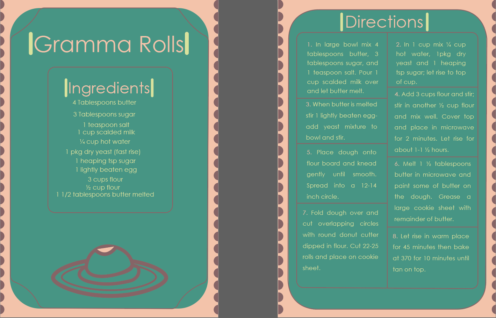

About
My name is Haley Magnani, and I am a student at the University of Eau Claire, Wisconsin. I grew up in Eden Prairie, Minnesota, and I’m also a triplet (brother and sister). I transferred from the University of Minnesota Duluth, where I previously found my passion for graphic design. I am currently majoring in Graphic Communications, learning new things every day.
I have done many different projects, and I’ve always wanted to be as creative as possible with them.

Projects
A recipe template I designed while at the University of Minnesota Duluth. My grandma gave me the recipe of how to make her “gramma rolls” awhile ago and I wanted to design a cool layout for it. This specific recipe is passed down from generation to generation so I knew how much it would mean to her when I decided to do something like this. I have multiple variations of the design but only one is shown here.
I worked on this redesign of a website at the University of Wisconsin, Eau Claire. It’s an interior and exterior house painting service that my parents used when they needed their house painted. I took a look at their website and decided to redesign it to what I thought would look better. This project was a lot of fun and I had plenty of freedom to do what I wanted with it.
This design is one I worked on at the University of Minnesota Duluth. I took an image of a clock in my house and redesigned it. This was one of my most difficult designs to complete mostly because I had to get the shading right as well as the specific design of the birds. I put it at an angle to have it stand out from the background.
In my recent digital design class I had to create a book cover of something I’ve read and really enjoyed. I chose the Hobbit because I’ve read it so many times and it’s been a long time favorite. Designing a book cover for this was challenging. I had to think about a few things that I felt had big impacts on me while reading it. But I also had to think about the audience and what they would like to see. So, I took my small ideas and I made them bigger.
This is a design based on a russian letter when at the time I was learning russian. I thought their alphabet was very unique so I wanted to impliment that into a design I could do. Each variation is slightly different such as different shapes are moved or the colors are swapped.